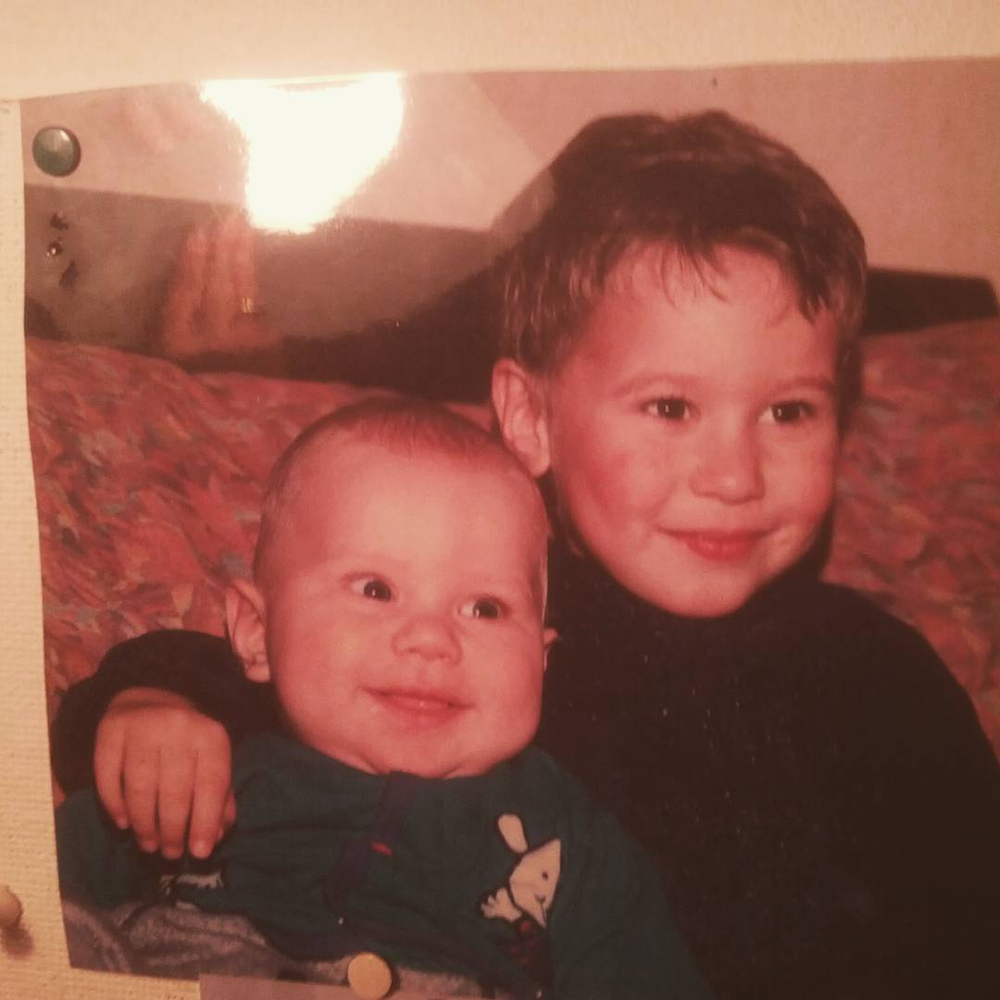

HOW IT ALL BEGUN
Long time ago, in a small village of Denmark, a boy was born. On the day he was born, the stars aligned in a special way and gifted him with the best present that he was able to use all his life - his talent.
Since a young boy, music was a big part of Asbjørn’s life. He grew up listening to famous musicians such as David Lynch and Leland Sklar, but his main inspiration was his own father, who is also a musician. Asbjørn learned from him what love for music is and picked up special skills which are required in order to become a great musician.
